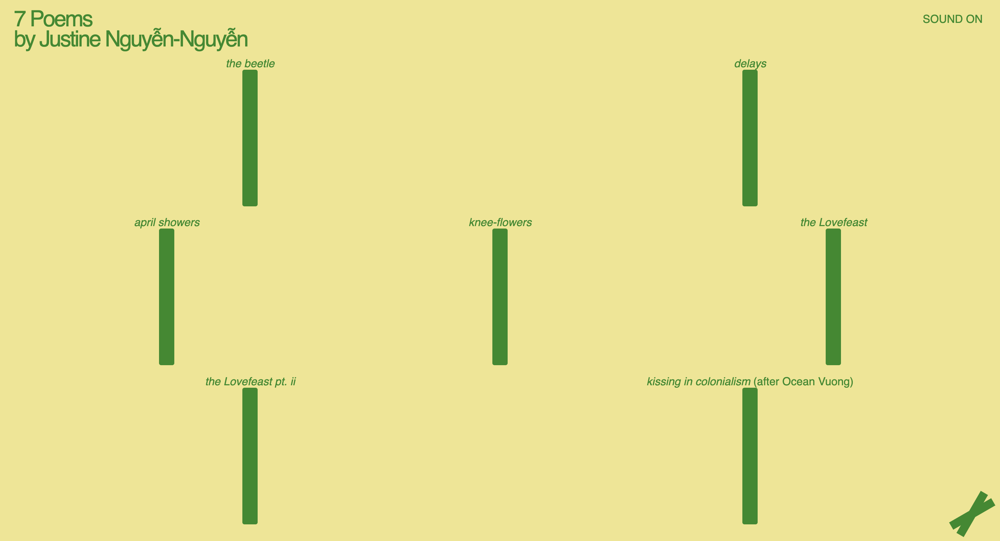

Interactive Media Assignment 1

Link to website
Week 2 Research Questions:
1) What was the first thing you paid attention to when interacting with the experience?
When opening the website the first thing i paid attention to was the different green sticks that sort of look like bamboo shoots.
2) Spend two minutes with the experience and create a list of each of your discrete actions.
- When clicking on the green sticks, a rectanlge appears which showcases the poem is single words. Sound is also played in the background.
- When you click on a poem that is already playing it would pause the poem as well as the sound. The color of the rectangle would change to a dark green color.
- There is a mute button at the top right corner that would mute all the sound playing.
- The bottom right corner button allows the user to view other works by other creators.
- When clicking on the title and authors name at the top left corner, the page will reset and all the poems would close and restart.
3) What part of the experience did you spend the most time engaging with?
I spent the most time reading the 7 different poems. At read them one at a time with the sound muted.
4) What was the most common action in your two minute interaction with the experience?
The most common action for me would be clicking the title to reset the poem once I finished reading it.
5) What is your impression of the intended primary goal of the interactive experience?
I believe that the intended primary goal was to showcase all 7 different poems.
6) What is your impression of how the interactive experience communicates its primary goal?
I believe that the interactive experience does really well in terms of achieving its primary goal. This is due to every interaction avaliable on the webiste relates back to reading the 7 differnet poems. I would have liked it if the words of the poems didn't show up one at a time though.
7) What is your impression of how the experience should be interacted with over time? (For how long and how many different times)
I feel as if the experience is more of a one time only. Or at least once every while. Once all 7 poems are read nothing changes. All 7 poems are repeated as you click on them. However users are free to reread the poems when they want to.
8) What is your impression of how the interactive experience communicates how it should be interacted with over time?
My impression is that the website clearly communicates that it should interacted with once every while. This would only be done to reread the poems another time. Again this is because the experience you gain from this website won't change.
Week 3 Research Questions:
9) What other media forms (digital or otherwise) does the experience reference?
Answer
10) What does this reference or references suggest to you about how you should act when engaging with it?
Answer
11) What does this reference or references suggest to you about how you should feel when engaging with it?
Answer
12) What is the most frustrating element of the interaction to you and what makes it frustrating?
Answer
13) What is the most satisfying element of the interaction to you and what makes it satisfying?
Answer